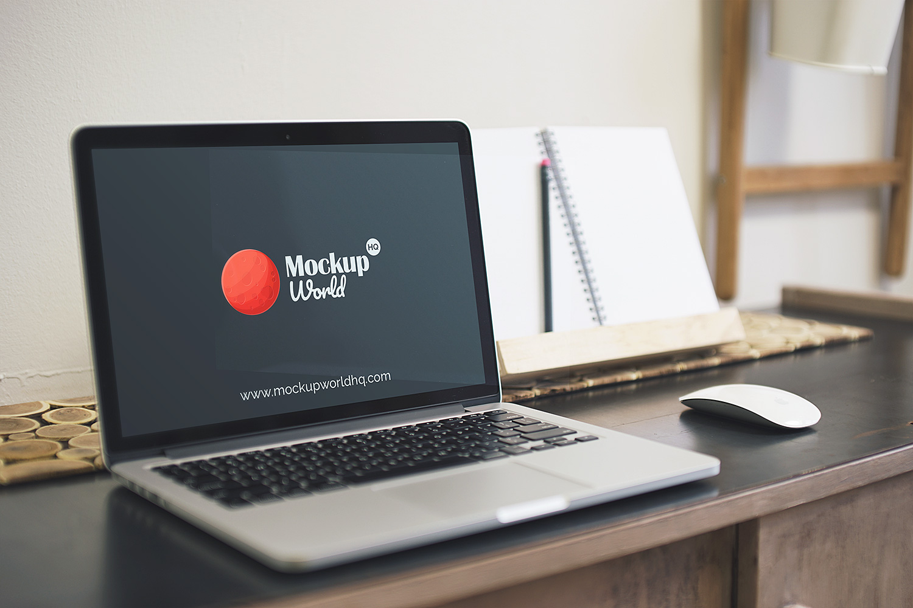
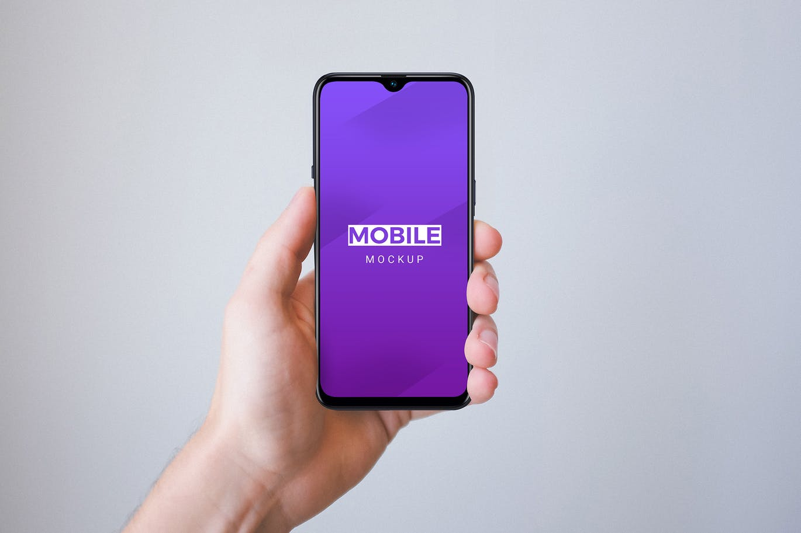
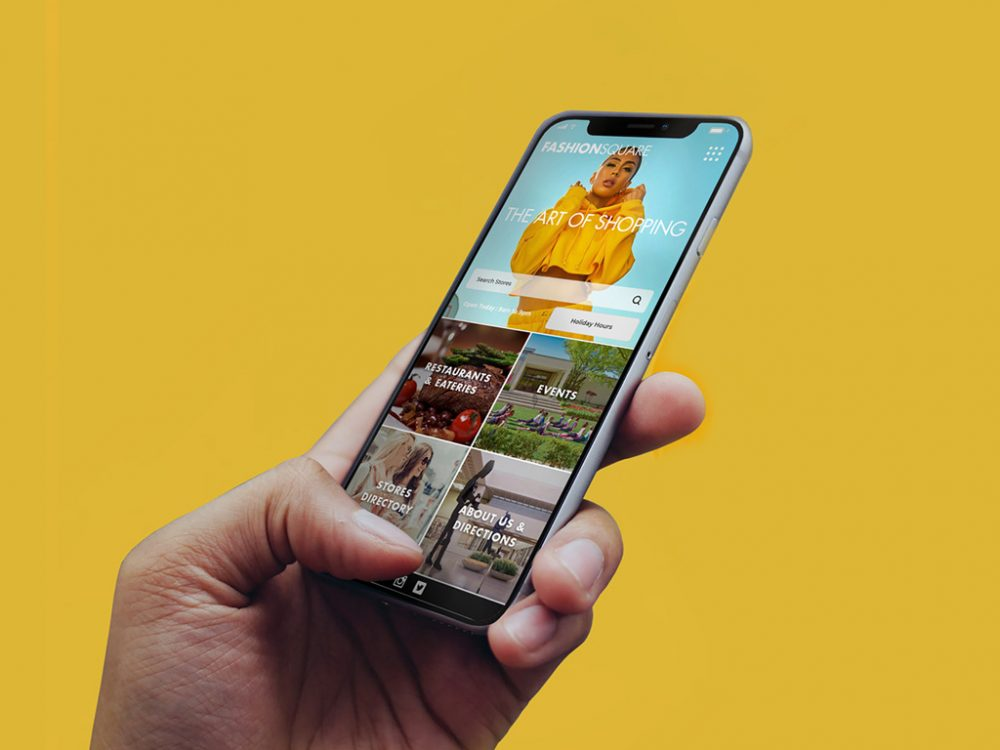

Portfolio Alex
Descrição do projeto
O portfólio demonstrado abaixo se baseia no curso que foi concluido por mim, ao qual me abriu o início do desenvolvimente web.
Este projeto de Web Design consiste de portfólio responsivo e funcional, tanto para aparelhos móveis quanto para desktop.
O objetivo principal desse novo site é demonstrar um design de uma página web para portfólio, trazendo assim mais transparência para demonstração de trabalhos e para apresentão de ofertas para futuras oportunidades de emprego.
↢ Voltar ao início